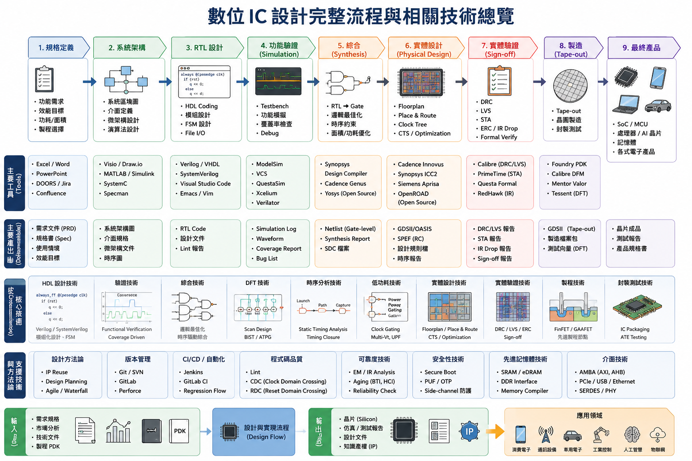
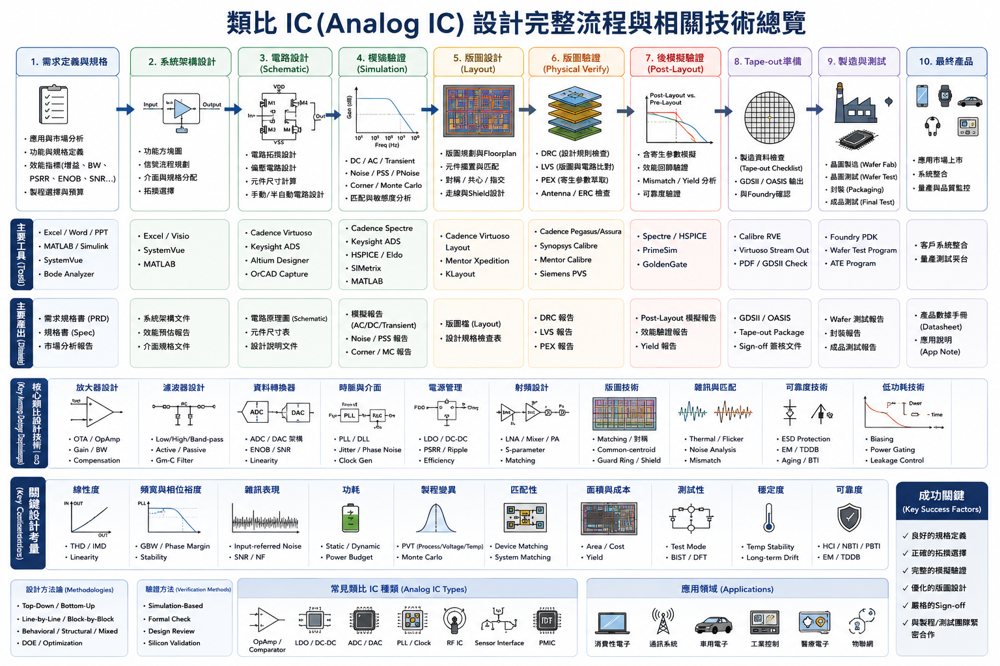
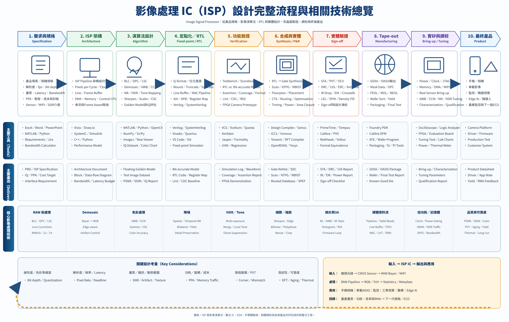

全部網頁首頁
可搜尋標題或內容，也可依「研究、面談、教學、申請、論文」分類篩選。圖片與按鈕都能開啟頁面。

IC 基礎
EDA／實體設計
三類 IC 總覽三門 IC 核心課程詳細比較
以加強版下拉介面比較邏輯系統、計算機組織與 VLSI CAD，並收錄計組期末報告與技術解析。
Gate／FSM｜CPU／Pipeline｜RTL-to-GDS
進入三門課核心比較 8 篇完整論文
8 篇完整論文 近年研究地圖
近年研究地圖教授近年研究與學生論文
2004–2025 研究演進、22 筆近期論文、CIM、Transformer、NVDLA、NoC 與安全。
22 Theses｜AI Accelerator｜Security
進入研究地圖整套資料的關係圖
建議先認識研究方向，再補齊課程基礎，接著閱讀論文，最後整理申請與面談回答。
研究方向IoT／CIM／AI Hardware
→
課程基礎邏輯／計組／VLSI CAD
→
論文理解8 篇全文＋22 筆研究
→
申請資料履歷／自傳／修課
→
面談表達60 秒＋研究題目
八篇代表論文快速入口
圖片連到第一套論文解說首頁；完整 PDF 可由解說網站的論文頁籤開啟。
8T SRAM 記憶體內運算
多位元 CNN、邊緣裝置與高能源效率。

PUF 安全 RISC-V
IoT 裝置的硬體與韌體安全。
強化學習 DVFS GPGPU
任務管理、頻率電壓控制與能效。

RRAM 非揮發 SRAM
低電壓備份與儲存能量效率。

GPGPU 動態功率管理
邊緣裝置的硬體使用率與能效。

GPU 智能熱管理
溫度、效能與功耗控制。

多層展頻浮水印
互補碼、影像處理與資訊隱藏。

HMM 語音情緒辨識
語音特徵、初始模型與辨識。
檔案索引與直接入口
| 資料群 | 內容 | 入口 |
|---|---|---|
| 教授研究 | 研究演進、研究計畫、近年學生論文 | 研究演進｜第二版研究地圖 |
| 面談準備 | 30 題、10 個題目、60 秒中英文回答、技術速查 | 30 題版｜最終版 |
| IC 教學 | 邏輯系統、計組、VLSI CAD、IC 設計、三類 IC 流程 | 邏輯｜計組｜VLSI CAD｜整合總覽 |
| 論文資料 | 8 篇完整 PDF、48 張代表頁、22 筆 JSON | 圖文解說包｜研究地圖 |
| 申請資料 | 專題申請表、自傳與成績單 | 申請頁｜自傳 PDF｜成績單 PDF |
| 結構化資料 | 111～113 學年度 22 筆論文資料 | recent_theses.json |
隱私提醒：申請表、自傳與成績單含個人資料。若網站要公開上線，請先移除學號、電子郵件、成績、照片與其他可識別資訊。
建議使用順序
1｜先掌握研究方向
閱讀研究演進與第二版研究地圖，整理教授關注的 CIM、AI 加速器、低功耗與硬體安全。
2｜補齊技術基礎
依序複習邏輯系統、計算機組織、VLSI CAD 與整合 IC 流程。
3｜挑兩篇論文深讀
選一篇最相關、另一篇作延伸，準備問題、方法、貢獻及可改善處。
4｜連到個人經驗
把修課、競賽與專題經驗對應到研究方向，形成具體申請動機。
5｜練習面談
先做 30 題完整練習，再用最終面談版進行 60 秒快速複習。
6｜公開前去識別化
若要放上公開網站，請建立公開版申請頁，不要直接發布原始個人資料。